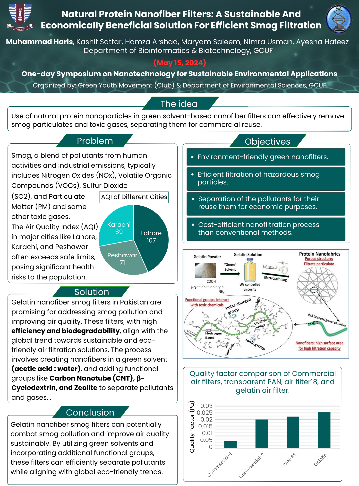
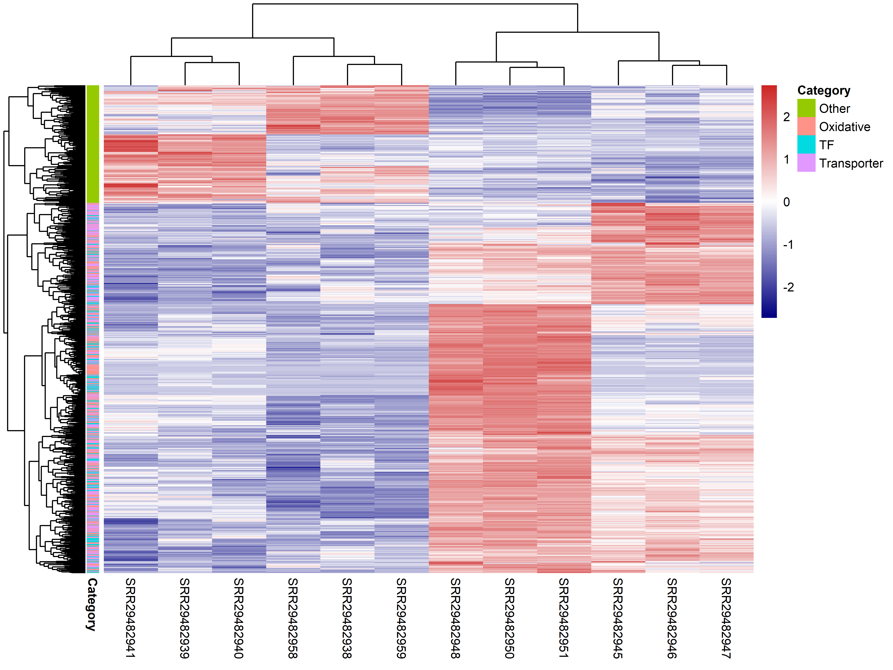
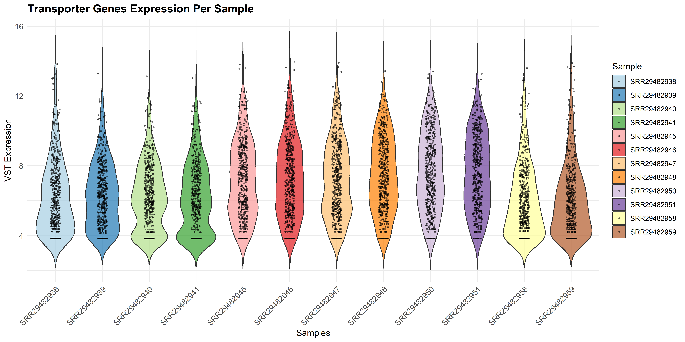
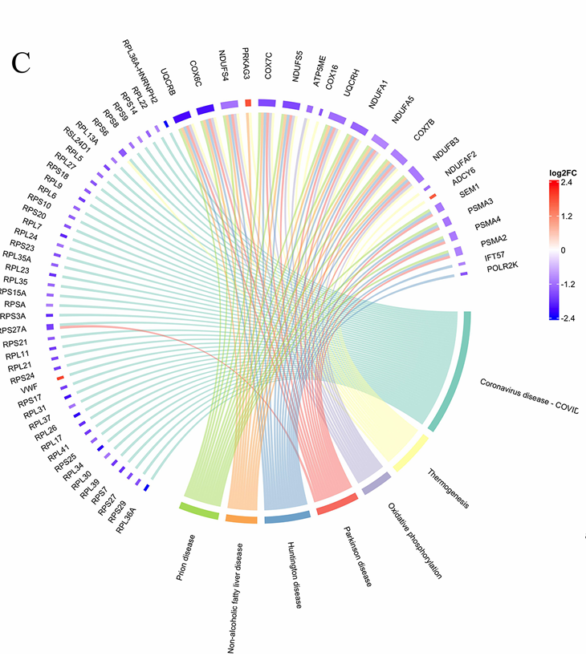

Scientific Posters.


BIOINFORMATICS & BIOTECHNOLOGY
Hi, I'm Muhammad Haris, a multidisciplinary researcher passionate about single-cell transcriptomics, multi-omics integration, and machine learning approaches that bridge wet lab and dry lab biology for real-world impact.
I am a bioinformatician and biotechnologist currently pursuing Master's in Bioinformatics at Government College University Faisalabad. My work is defined by a commitment to bridging the gap between biological inquiry and computational analysis, with a core focus on transcriptomics and network medicine.
Through research fellowships and internships at institutions like ICCBS and the Ayub Agricultural Research Institute, I have developed a multi-disciplinary approach to complex biological problems. I operate at the intersection of medical genomics and plant biotechnology, ensuring that data-driven insights are always grounded in experimental reality.
I am a strong advocate for Open Science and community leadership, serving as an active communicator and environmental advocate. I believe that the future of biotechnology lies in collaborative, transparent, and reproducible research across both the clinical and agricultural domains.
I operate at the interface of experimental and computational biology, applying integrative approaches to bridge the bench and the terminal. My focus is on making biological data reproducible, interpretable, and actionable for the scientific community.
End-to-end RNA-seq and scRNA-seq pipelines. Transforming raw sequencing data into structured biological insights and pathway annotations.
Whole-exome and whole-genome sequencing analysis using industry-standard pipelines for high-confidence variant identification.
Applying predictive modeling and feature selection to multi-omics datasets for biomarker discovery and biological classification.
Integrating genotype-phenotype associations with PPI network analysis to identify central molecular hubs in complex diseases.
Synthesizing global genomic evidence using rigorous methodologies to establish effect-size baselines and trend intelligence.
Hands-on expertise in tissue culture, PCR/qPCR, and biochemical assays for the experimental validation of computational findings.
A comprehensive stack of tools, languages, and methodologies I leverage to solve complex biological problems.
Bioinformatics Core
Biotechnology (Wet Lab)
Programming Languages
Web & Databases
Computational Design
ML & Statistics
Analytical depth across core bioinformatics domains — visualized as a skill radar.
OPEN SCIENCE COMMITMENT
Every pipeline I build follows version-controlled, containerized standards (Git, Conda, Docker). I believe good science must be reproducible — every result I generate is verifiable, documented, and ready for peer-reviewed scrutiny or collaborative extension.
High-impact initiatives where biology meets engineering to solve specific research challenges.
An automated transcriptomics platform for end-to-end analysis, from quality control to discovery.
A specialized cardiovascular database for pharmacological trends and drug-gene interactions.
Interactive platform for exploring genome-wide gene family studies and trend analytics.
Investigating molecular defense mechanisms in wheat under oxidative stress using profiling.
Integrative pipeline for identifying therapeutic targets through protein interaction networks.
Python-based utility for structured data extraction from scientific literature and studies.
Development of the first centralized database in Pakistan for HCM pharmacological trends, integrating drug-target networks for multi-center clinical use.
Systematic optimization of hormonal concentration frameworks to enhance induction efficiency in transgenic maize models.
Multi-omics analysis of HCM datasets identifying zinc-based compound targets for clinical intervention.
Utilizing iron nanoparticles to restore stress-responsive gene pathways in metal-contaminated agricultural models.
Statistical pooling of evidence from 100+ global studies to establish effect-size baselines for genome-wide evolution.
Development of automated NLP tools for rapid literature mining and data extraction from scientific repositories.

Visual results from genomic pipelines, network analysis, and high-throughput transcriptomics.





.png)
Snapshots from the lab, conferences, and the vibrant scientific community.


Whether you're working on a joint research project, need a bioinformatics collaborator, or just want to talk science — I'd love to hear from you.